← 返回阅读库 · 原论文目录
论文讲解阅读文档 · 新模型 · v068
NAT Neighborhood Attention Transformer[2204.07143]
视频时长 00:05:13；讲解文字 2,808 字符；提取讲解画面 17 张。按视频原顺序阅读，每段文字保留时间戳。
文字来自整段视频的自动语音转写，按自然停顿分段，并与 PPT / 论文页面 / 演示画面对齐。未将讲解压缩为摘要；术语、数字和口述公式请结合画面及原论文核对。 阅读稿已校正规范部分明确术语误识别；原始逐字稿和每处修改记录另行保留。
讲解画面为源视频截图（640×360），不是可编辑 PPT 文件。全片按每秒 2 帧扫描内容变化，逐步展开页保留；连续动画保留代表画面。清晰度受源视频限制。
下载完整资料包 · 含离线 HTML、PDF、Word、全部 PPT 画面和字幕。
原论文与材料
Neighborhood Attention Transformer · 下载完整 PDF（17 页）
按时间阅读
00:00:00–00:00:07 · 画面 001
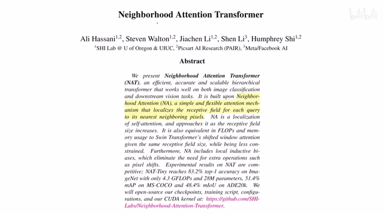
00:00:00–00:00:07 · 画面 001大家好啊，今天我们来快速使用一篇论文，neighborhood attention transformer。这篇论文呢，非常简单，一个 neighborhood attention 什么意思呢？看这个图啊，一个标准的 self attention，我们 vision transformer 里面用的这个红色的 token 也好，这个蓝色的 token 也好，他们都是跟其他的所有的 token 做这个 attention。那对比之下，Swin Transformer 他把我们这个 attention 的范围限制在了一个局部的这个 windows 里面啊，局部的这个小窗里面这样子呢，各自做各自的。
00:00:07–00:00:16 · 画面 002
00:00:07–00:00:16 · 画面 00200:00:16–00:01:10 · 画面 003
00:00:16–00:01:10 · 画面 003然后呢，在下一层呢，我们去换一下这个划分小窗的位置，就像这样啊，对吧？就这样做 attention。那本文的 attention 呢，更直接，就是我 attention 的范围呢，只局限于自己这个 token 周边的这些 token，然后这个蓝色也是只局限于周边的这个 token。那其他的这些外围的这个 token 都不关注，所以他的这个实现呢，就跟 convolution 一样。
只是在一个 kernel 里面的范围内去做操作，但是和 convolution 不同的是，因为我们做的是 attention，所以每一个 value 之后出来的权重是根据我们输入的值来决定的，而不是像 convolution 一样固定的一个值。那这个呢，就是本文的核心的思想。那这个视频到这里其实就可以结束了，那么一点小的细节，比如说我们的这个 neighborhood 这个 neighbor 可以选多大对吧？你可以从 3 乘 3 一直选到整个图整个图这么大。那像整个图这么大的时候呢，就是跟我们的 self-attention 是等效的了。那然后我们来看具体的实现啊，一个对于一个任意位置的一个 IG 的这么一个 token 来说对吧，它的这个 neighbor 假如说这是一个集合是一个 row，那么这个 query 和 key 这里呢做着加上一个 relative positional embedding。
00:01:10–00:01:17 · 画面 004
00:01:10–00:01:17 · 画面 00400:01:17–00:01:22 · 画面 005
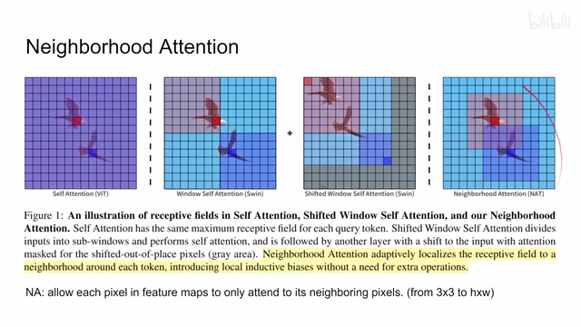
00:01:17–00:01:22 · 画面 00500:01:22–00:02:06 · 画面 006
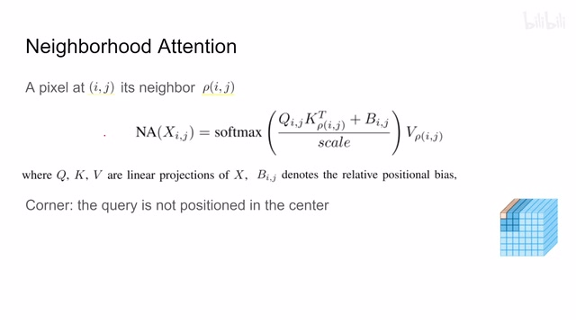
00:01:22–00:02:06 · 画面 006啊，这个呢，也是很常见的套路了。然后呢，normalization 这样是一个 attention value，然后乘上这个实际的 value 就可以了。那么这种 attention 呢，是从当前的一个 query 他周周边取这些 key。那如果到角落里没有 token 怎么办呢？比如说他的这个 attention 怎么解决呢？很简单对吧，也是做一个 neighbor，只不过这个 neighbor 呢被限制在了这个 tensor 里面。然后呢，这就导致我们的这个 query 他不在这个 attention 的这个 window 的正中间啊，一样做他在哪其实并不重要。
那么这个就是 neighborhood attention，作者还分析了一下它的计算代价，我们简单来看一下，对比了这样 self attention 对吧，convolution 这些东西，从这个计算复杂度来说，linear projection 把我们的 key query 和 value 都投影出来，这个大家都是一样的。然后计算 attention，每个 token 有 c 个 channel，相对于 self attention 的 h 乘 w 这里全部划成 l 就是我们局部 attention 的 window 它的边长，那么它的邻居一共就是 l 乘 l 这样一个 token。
00:02:06–00:02:49 · 画面 007
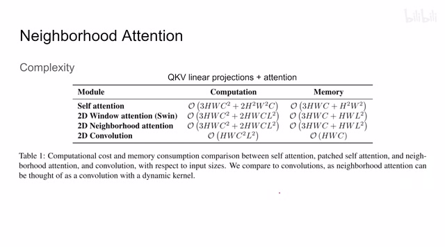
00:02:06–00:02:49 · 画面 007那 attention value 做一次，在乘上这个 value 做一次，所以前面有一个 2，这个就是计算的复杂度。所以你这个 L 可以选的很小嘛，计算复杂度相对于这个 selfattention 就大幅下降，同时这个内存的占用也是减少了。那最后来看作者根据这个 neighborhoodattention 建出来这个 transformer 这个网络，首先是每一个 block 对吧，就是把这个全局的 selfattention 换成了这个 neighborhoodattention。
00:02:49–00:03:00 · 画面 008
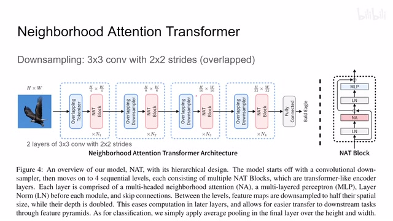
00:02:49–00:03:00 · 画面 008然后整个结构跟 Swin 也是一样的四个阶段然后每个阶段的时候我们把 Spatial Resolution 砍掉一半那么砍的方法这里跟 Swin 有区别就是这里虽然用的是 3x3 的卷积但是它是有一个 2x2 的 stride 这样子我们在 downsample 的过程中也有这种 Overlapping 也会把相邻的信息给它相互交互起来这个是 downsample 和我们的 Swin Transformer 的区别
00:03:00–00:03:01 · 画面 009
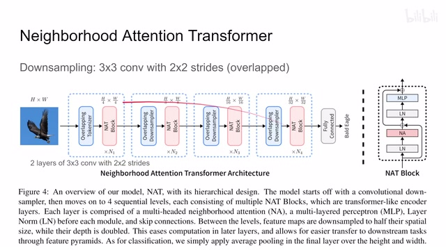
00:03:00–00:03:01 · 画面 00900:03:01–00:03:36 · 画面 010
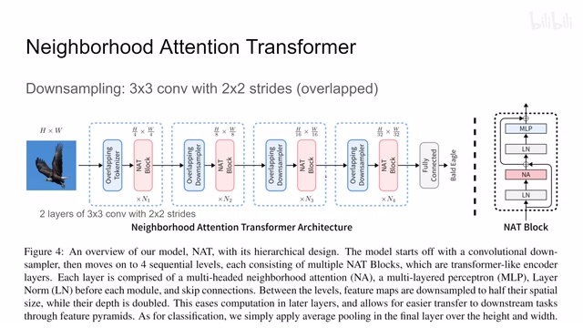
00:03:01–00:03:36 · 画面 010那么当然一开始我们把这个图像变成 token 的时候呢也是用了两层这个三乘三的卷积但是呢带这个二乘二的这个 stride 那这个就结束了以上就是本文的主要技术细节了那下面我们就来看实验里面啊首先是根据不同的这个参数量对吧我们的不同尺寸的模型四个阶段嘛每个阶段的层数然后 dimension 的数量和这个 head 的数量然后注意这里所有的这个 neighbor attention 呢它都是用了这个七乘七的这个 attention 那这个呢就是主要的网络结构的几种辨识
00:03:36–00:03:55 · 画面 011
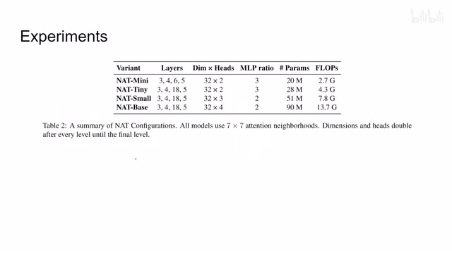
00:03:36–00:03:55 · 画面 01100:03:55–00:04:11 · 画面 012
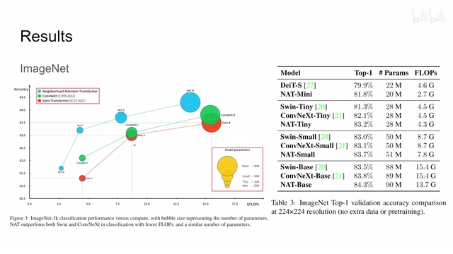
00:03:55–00:04:11 · 画面 012然后一个快速的结果 ImageNet 一些漂亮的图表对比了 DEIT 和 Swin 这些我们之前都介绍了还有 ConvNeXt 这个也是最近很出名的一个工作了反正一些漂亮的数字感兴趣的朋友仔细研究一下包括后面作者还做了其他的下游任务包括 Object Detection 还有 Instance Segmentation 感兴趣的朋友欢迎到原文查看它的实验的配置还有它汇报的一些结果
00:04:11–00:04:18 · 画面 013
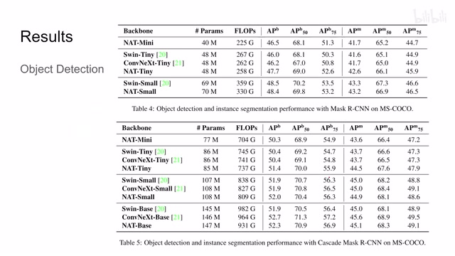
00:04:11–00:04:18 · 画面 01300:04:18–00:04:19 · 画面 014
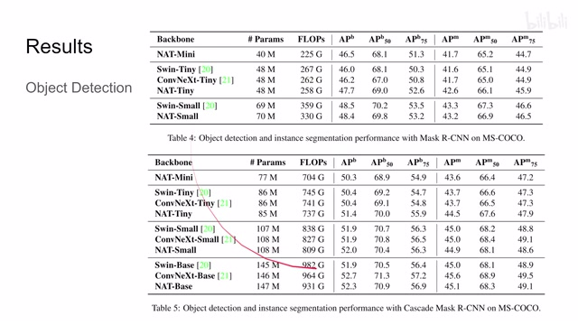
00:04:18–00:04:19 · 画面 01400:04:19–00:04:23 · 画面 015
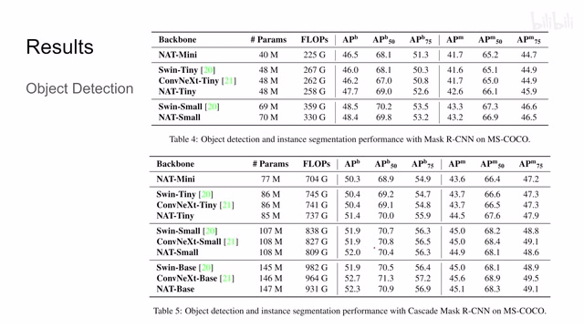
00:04:19–00:04:23 · 画面 015那最后呢我们来关注一些 ablation 啊首先这个 position embedding 会很有用啊这个 Swin 里面的包括这个 neighborhood attention 这些东西加上这个 position embedding 之后啊性能的提升然后还有我们采样的时候这个 convolution 的设计啊从原来没有交叠的这种 convolution 变成了这种有交叠的 convolution 啊这这个 ablation 证明了首先有交叠的 convolution 是管用的同时呢本文的这个 neighborhood attention 是管用的
00:04:23–00:05:13 · 画面 016
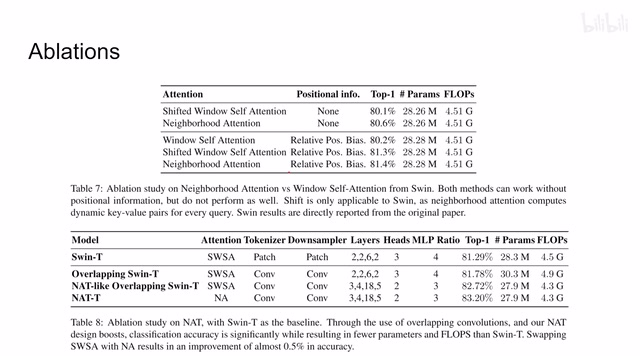
00:04:23–00:05:13 · 画面 016那么总的来说呢本文的这个思想呢我相信很多人也都想到过但是呢它的难点其实在于它的这个 CUDA 的这个实现上因为现有的 CUDA 呢没有一个能够很好的支持你去高效的去做这种 neighbor 的 attention 所以呢这里作者就需要重新写这个 CUDA kernel 是这样的那么以上呢就是我对这篇论文的一个快速的整理那么感谢您的收看再见
00:05:13–00:05:13 · 画面 017
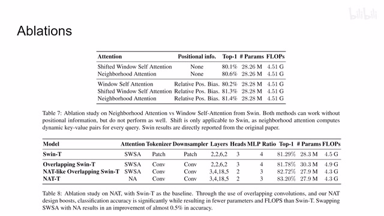
00:05:13–00:05:13 · 画面 017转写与来源说明 · 0 个自动复核提示
保留 12 个原始语音片段，0 个片段触发自动复核提示。提示仅用于定位可能的术语、重复或识别问题，不等于已确认错误。
讲解画面为源视频截图（640×360），不是可编辑 PPT 文件。全片按每秒 2 帧扫描内容变化，逐步展开页保留；连续动画保留代表画面。清晰度受源视频限制。
原视频：paper/合集_2026-10-16_新模型/[论文简析]NAT Neighborhood Attention Transformer[2204.07143].mp4
SHA-256：60e308b813e889a990aa78445f67bf3aef859886cea8017a9873d0479c9db8be
全文按视频语音与画面制作。原论文可从上方链接下载；完整资料包保留全文、原始逐字稿、字幕和校对记录。